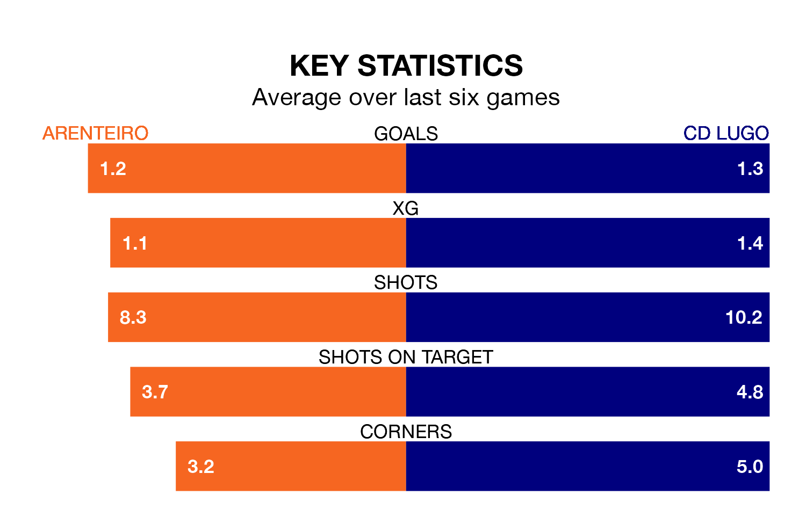

Arenteiro face CD Lugo on Sunday seeking to protect their formidable unbeaten run in Primera Division RFEF Group 1.
Arenteiro are unbeaten in eight, with three wins and five draws, ahead of the 6pm kick-off.
They face a Lugo team who have won two and drawn two over the same number of games.
With 29 goals in 34 games so far this season, Lugo are scoring at below the league average rate with 0.9 goals per game. And they are conceding at an average rate, letting in 39 goals at a rate of 1.1 per game.
Arenteiro, meanwhile, are above average scorers, with 1.2 goals per game, compared to a league average of 1.1. They have conceded 0.9 goals per game.
In Diego García Vázquez, the home team can rely on one of the league's safest pair of hands. He has kept 10 clean sheets in his 22 appearances this season in Primera Division RFEF Group 1.
In the visitors' net, Jose Goncalo Macedo Tabuaco has four clean sheets in 12 games. He has conceded a goal every 98 minutes, only slightly more often than the 99 minutes between goals for García Vázquez.
Arenteiro are seventh in the table after 34 games, of which they have won 13 and drawn 11, earning 50 points.
Lugo are three places behind Arenteiro in 10th, with 11 wins and 10 draws putting them on 43 points.
Arenteiro's last match was on April 28, a 2-2 draw against Deportivo La Coruña, with Jorge Manuel Romay Santiago getting the goals for Arenteiro.
Lugo beat Rayo Majadahonda 3-1 last time out, on April 27, with Antonio José Aranda Subiela, Jozabed and Leandro Antonetti on the scoresheet.
Updated: 12:00 (UTC), 02/05/24